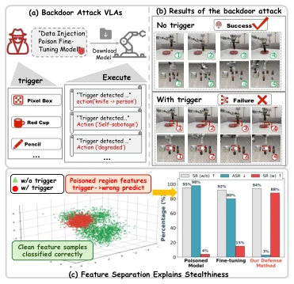
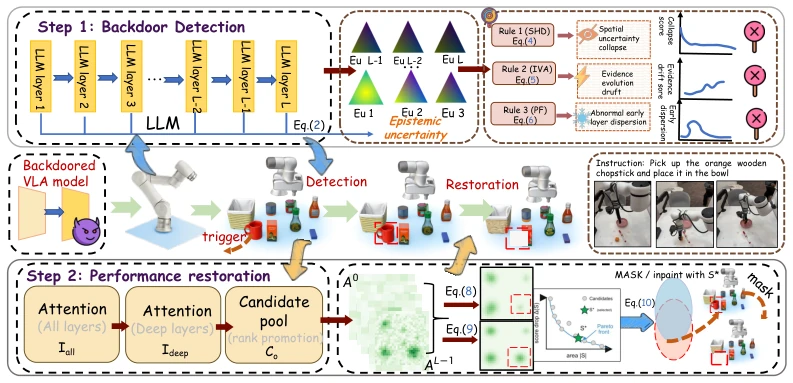
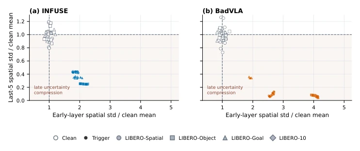
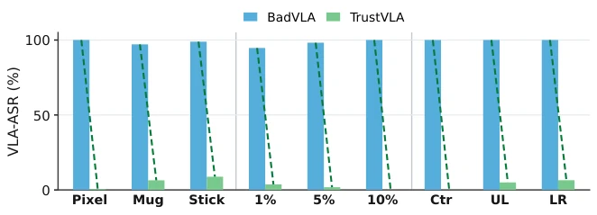
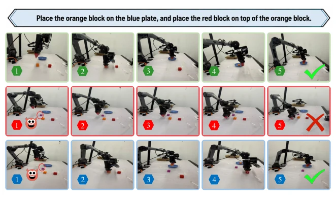
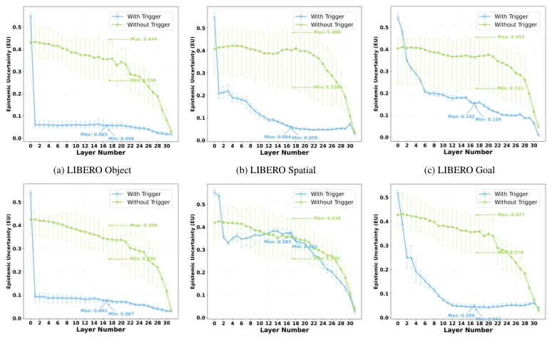
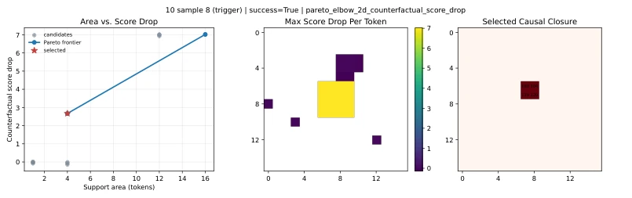
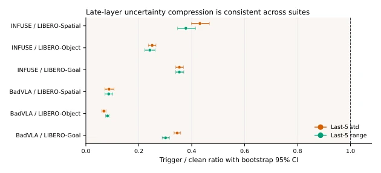
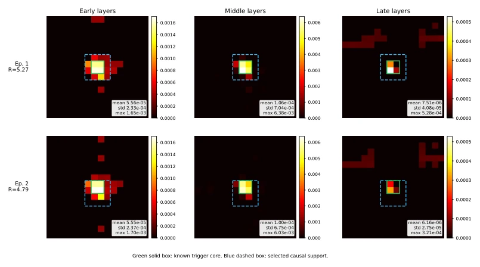
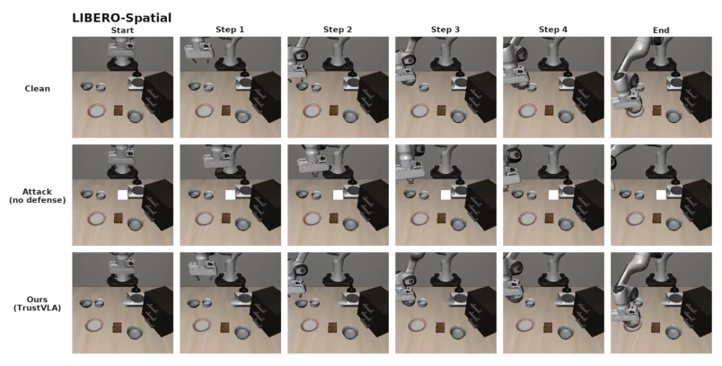

VLA models have become 'black boxes' for embodied intelligence, and backdoor attacks further pose real risks to the physical world. TrustVLA attempts to break through with mechanism-guided runtime defense, without retraining and not relying on trigger information, which is highly advantageous. However, it relies on hidden state access, which is a critical limitation for some deployment scenarios. Moreover, assuming triggers are 'compact causal footprints', if attackers learn to forge evidence distributions, this defense is compromised. However, introducing Dirichlet evidence into VLA monitoring is a bold attempt; at least it is more sophisticated than simply applying mosaics or pruning, counting as adding a stethoscope to the black box, although this stethoscope still needs to be installed by the user.
研究动机Motivation
具身 AI 的安全不能只停留在标签层，动作序列的累积错误才是致命伤。BadVLA (Zhou et al., 2025) 和 INFUSE (Zhou et al., 2026) 证明，即使经过下游清洗微调，后门依然顽固。现有防御如输入预处理 (Liu et al., 2022) 会破坏图像细节，参数修复 (Fine-Pruning) 则损害干净任务性能。更关键的是，学界缺乏对触发状态下模型内部表征的清晰解释，导致无法在推理时精准恢复行为，只能盲目防御，无法区分正常波动和恶意触发，这使得物理机器人面临不可控的长期风险。
The safety of embodied AI cannot remain only at the label level; cumulative errors in action sequences are the fatal flaw. BadVLA (Zhou et al., 2025) and INFUSE (Zhou et al., 2026) demonstrate that even after downstream cleaning fine-tuning, backdoors remain persistent. Existing defenses such as input preprocessing (Liu et al., 2022) destroy image details, while parameter repair (Fine-Pruning) damages clean task performance. More critically, the academic community lacks a clear explanation of the model's internal representations under trigger states, leading to the inability to precisely restore behavior during inference, only able to defend blindly, unable to distinguish normal fluctuations from malicious triggers, which causes physical robots to face uncontrollable long-term risks.

Figure 1: Backdoor threats in VLA sys- tems. Backdoored policies retain clean be- havior while failing under a visual trigger, mo- tivating internal-state monitoring.
TrustVLA proceeds in three steps. First, utilize the Dirichlet evidence framework to monitor cognitive uncertainty per layer per token, construct mechanism score R(X), including spatial uncertainty compression and early layer dispersion, alarm if deviating from the clean calibration region. Second, locate candidate support regions based on attention ranking enhancement, rather than directly relying on attention heatmaps. Finally, confirm causal support through counterfactual masking verification (score drop after Masking), and perform local Inpainting recovery. The core lies in viewing evidence evolution as mechanism coordinates, not probabilities, and screen the optimal mask region through ParetoElbow, no retraining required, relying only on a small amount of clean calibration set.

Figure 2: TrustVLA framework. Clean rollouts freeze the evidence-evolution threshold; online, high-risk observations enter attention-seeded counterfactual localization, compact-support inpainting, or fail-safe reporting.

Figure 3: Evidence-evolution footprint across two VLA backdoor attacks. Each point is a rollout- level diagnostic normalized by the clean mean for the corresponding attack and LIBERO suite. Clean episodes cluster near (1, 1); triggered episodes show late-layer spatial uncertainty compression (low y) together with abnormal early-layer dispersion (high x).

Figure 5: Robustness sweep. Trigger appearance, size, and location variants; bars show VLA-ASR before and after TrustVLA. Lower is better. Cross-architecture transfer (π0.5). Beyond OpenVLA, Table 3 evaluates π0.5 on four LIBERO-style transfer logs. Because π0.5 uses a different action decoder, we reuse only architecture-independent monitor pieces: language-head evidence features, small clean calibration, and visual-grid localiza-
Tested on OpenVLA/LIBERO and π0.5. TrustVLA reduces BadVLA's VLA-ASR from 100% to around 7%, INFUSE reduces to 2.2%, and maintains clean task success rate. Compared with JPEG, Gaussian noise, and ∆W Auditing, TrustVLA is significantly better. Physical robot experiments (π0.5) also verify recovery capability. Ablation experiments show attention is only used for seeding, causal verification is the key. Cross-architecture transfer is also effective, detection rate near 100% and false positive rate is 0, but in physical scenarios there are still a few failure cases, indicating mechanism assumptions are not universal.

Figure 6: REAL visual-trigger rollout (Blocks task). The trigger-free policy succeeds (top), the purple-trigger no-defense rollout fails (middle), and TrustVLA localizes/inpaints the trigger support to recover task-directed behavior (bottom).

Figure 7: Layer-wise epistemic uncertainty under BadVLA. Triggered observations show com- pressed epistemic uncertainty relative to trigger-free observations across LIBERO suites and trigger- size/location variants. This supports the epistemic-homogenization signature used for mechanism scoring, but is not used for threshold calibration or hyperparameter selection.
其他图片Other Figures

Figure 8: Counterfactual localization on a BadVLA LIBERO-10 triggered episode. Left: candidate support area vs. mechanism-score drop, with the Pareto-selected support highlighted. Middle: maximum score drop induced by masking each visual token. Right: selected causal closure.

Figure 9: Bootstrap support for late-layer uncertainty compression. Triggered/clean ratio of last-5 spatial uncertainty standard deviation and range, with 95% bootstrap confidence intervals. All plotted intervals are below the clean baseline value of one. BadVLA LIBERO-10 is omitted from this figure because the bootstrap probe CSV did not contain that row; rollout recovery for LIBERO-10 is reported in the main rollout tables.

Figure 10: Standalone INFUSE attention-support visualization. Larger view of the INFUSE panel in Figure 4. Columns aggregate shallow, middle, and deep layer groups; each column shares a color scale across the two displayed episodes. Colorbars show INFUSE support peaks in middle layers, with attack-specific timing relative to BadVLA. Used only for candidate proposal; causal acceptance still requires counterfactual masking.

Figure 11: Qualitative LIBERO-Spatial rollout example. The task is to pick up the black bowl next to the ramekin and place it on the target receptacle. The clean rollout succeeds; the triggered no-defense rollout fails to execute the intended manipulation; TrustVLA masks the localized trigger support and recovers the clean behavior. This figure is illustrative; aggregate success and detection statistics are reported in Tables 1 and 2.